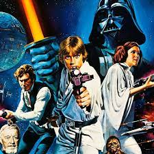
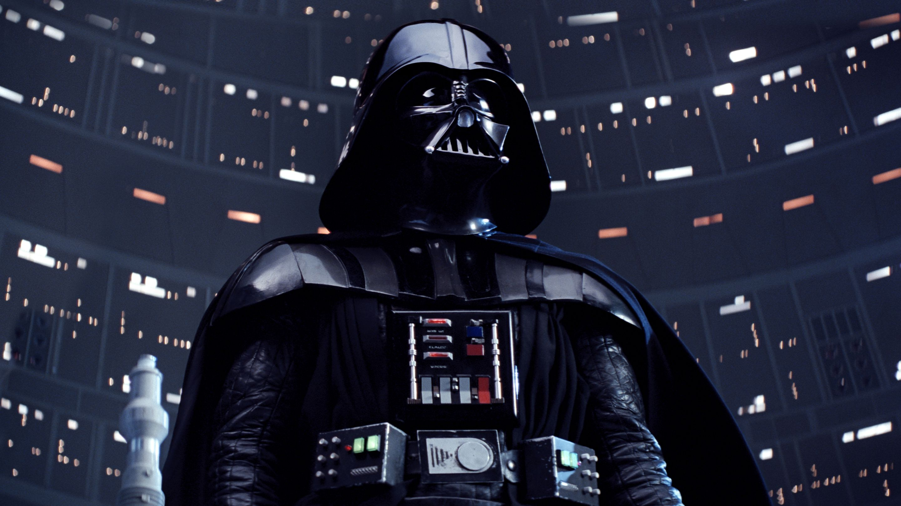

Official info on Star Wars
Star Wars is a story about good space
wizards and evil space wizards.
The good space wizards use green, blue
and sometimes purple lightsabers and
the evil space wizards use red lightsabers.
These space wizards use a special power
called the force, which can be used to
do incredible things, such as moving
heavy objects with their mind, play mind
tricks, create lighting and even prevent
death.
Star Wars history

Star Wars is an American epic space-opera multimedia franchise
created by George Lucas, which began with the eponymous 1977 film
and quickly became a worldwide pop-culture phenomenon.
The franchise has been expanded into various films and other media,
including television series, video games, novels, comic books, theme park attractions,
and themed areas, comprising an all-encompassing fictional universe.
In 2020, its total value was estimated at US$70 billion,
and it is currently the fifth-highest-grossing media franchise of all time.
Top 5 Star Wars Characters
- Darth Vader/Anakin's descent into Vader
- Obi-Wan Kenobi
- Han Solo
- Luke Skywalker
- Darth Sidious/Emperor Palpatine
The story of Anakin's descent into Darth Vader and becoming the most feared being in the universe, is the best story told in Star Wars.
The headstrong and loyal Obi-wan Kenobi, who beat Anakin head to head in a saber fight, proves how strong Obi-Wan is.
Hands down the smoothest and coolest smuggler in the universe who could pull off any mission he wanted to, along with his sidekick Chewie
The Jedi who went on a suicide mission to the Death Star to tempt Vader away from the dark side, why? because he was his family. How can you not love a guy like that.
The most evil being in the entire galaxy, the one who manipulated Anakin towards the dark side, the one who fooled the Jedi and masked his existence as a Sith Lord,
the one who orchestrated order 66, what more can you say, he is a legendary villain.